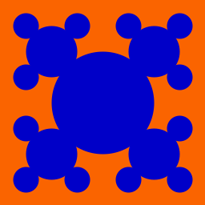
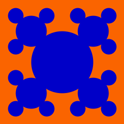

In this prelab you will formulate some of the ideas necessary to complete Lab 06. Please type your solutions, and hand in a paper copy before the beginning of class on Wednesday. Remember, no late prelabs allowed!
Part 0 - Recursive Output
For the following two problems, you'll work out by hand the result of function invocations of the following two recursive functions.
Function strange
def strange(x) :
if x <= 0 :
return 1
else :
return 5 * strange(x-1) - 2
Function weird
def weird(x) :
if x > 0 :
print(x,"",end='')
if x%2 == 0 :
weird(x-3)
weird(x-2)
else :
weird(x-1)
2) What is the output of weird(8)
Part 1 - Recursion with Numbers
As we have seen (or will have seen, depending on when you're looking at this), the factorial function can be computed not only using a loop, but via recursion as well. Recall the the typical definition of factorial looks something like this: 0! = 1, 1! = 1, 2! = 2*1 = 2 and 3! = 3*2*1 = 6, and in general, n! = n*(n-1)*...*3*2*1.
But we could also define the factorial function recursively as follows. We'll use fact(n) to denote our recursive representation of n!. We'll define fact(n) = 1 when n is 0 and fact(n) = n*fact(n-1) otherwise. If you think about it, fact(n) gives the exact same values as n!.
4) Give an recursive definition for the sum of the first n perfect squares. For example, your definition should satisfy sps(1) = 1, sps(2) = 1 + 4 = 5, and sps(3) = 1 + 4 + 9 = 14.
Part 2 - Recursion with Strings
Here is pseudocode for recursively printing a string s in reverse
If the length of s is 0, do nothing Otherwise, print the last letter of s and reverse s with the last letter removed.
Part 3 - Fractal Images
Consider the following sequence of fractal patterns.
 



Each pattern is built entirely out of filled in circles. The pattern can be described recursively as a single filled circle, with four patterns of one lesser depth and half the size, offset to the northwest, northeast, southwest and southeast.
More precisely, at each step in the recursion, you should draw one circle in some quadrant of the canvas, and then divide that quadrant into quarters, each of which will soon contain a new circle, a quarter of the size of the old one.
7) Write pseudo code to recursively draw this fractal pattern. Your function should take a recursive depth, d, representing how deep in the recursion you are, a center x,y, representing the center of the circle, and a size, r, representing the radius of the circle. You should stop drawing when the recursive depth equals 0, and you should subtract one from the depth each time you draw recurse. Your code should have a base case at recursive depth 0, and a recursive case.
Consider the following figure.
Let Ax and Ay denote the x and y coordinates of the corner labelled A in the large triangle above. Let Bx, By, Cx and Cy be definied similarly. Assume P, Q and R each lie at the midpoint of their corresponding edge in the triangle ABC.
The gasket pattern, also known as Sierpinski's triangle or Sierpinski's gasket, is built out of trianges. The depth 1 figure includes a single triangle, with lower corners at the lower corners of the pane, and the upper corner centered at the top middle. Each subsequent depth replaces the existing triangle with 3 triangles, each of half the width and half the height as shown below.


Consider the fractal patterns below.


rotate(theta) # rotate pen theta degrees clockwise drawForward(d) # draw a length-d line from the current position in the current direction.Assume each segment of the line is some fixed length X. Hint: Every rotation should be some multiple of 60 degrees.
Honor Code
If you followed the Honor Code in this assignment, write the following sentence attesting to the fact at the top of your homework.
I affirm that I have adhered to the Honor Code in this assignment.